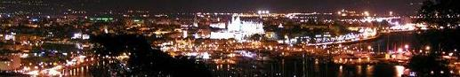

|
|
|||||||||
|
 |
||||||||||
|
Página de inicio de La Seu. |
||||||||||
| La Catedral de Mallorca es
el principal edificio religioso de la isla de Mallorca. En mallorquín,
se la conoce como La Seu (Seu o Seo es el nombre que reciben las
catedrales en la Corona de Aragón). Consiste en un templo de estilo
gótico levantino construido a la orilla de la bahía de Palma.1 Se asoma
al mar sobre las murallas romana y renacentistas que protegían a la
ciudad, siendo la única catedral gótica que cumple con esta
peculiaridad. Consiste también en la sede de la diócesis de Mallorca, su
titular es la asunción de María. En 1931 fue declarada Monumento Histórico-artístico. Además, se trata de la catedral con el mayor rosetón del mundo gótico,2 mayor rosetón original de todas las catedrales góticas europeas,3 ya que existen catedrales con rosetones de mayores dimensiones pero pertenecen al neogótico,4 y también una de las que tiene una nave de mayor altura entre las catedrales de estilo gótico europeas. Su construcción se inició en 1229, después de la conquista de la isla por la Corona de Aragón. El rey Jaime I, decidió derribar la antigua gran mezquita de Medina Mayurca para construir un gran templo dedicado a Santa María, debido a que al estallar un fuerte temporal durante la travesía por mar hacia Mallorca para conquistarla, prometió construirle una catedral en veneración si esta les salvaba de la muerte.5 En 1346, fue consagrada por el rey Jaime III, aunque los trabajos y acabados continuaron bastantes años después, ya que no se terminó hasta 1601, y, en rigor, se siguió (y se sigue) reformando y restaurando cada poco tiempo. Comenzó a construirse por el testero, alrededor del año 1300, sobre el lugar que ocupaba la mezquita arábiga de Madîna Mayûrqa, la cual se fue derruyendo a medida que avanzaban las obras del nuevo edificio, hasta que ésta terminó de ser derribada en el año 1386. El primer arquitecto del proyecto fue Ponç des Coll, el cual comenzó construyendo la capilla de la Trinidad. A Ponç le siguió en el cargo Jaime Fabre, arquitecto también de la Iglésia de Santo Domingo de Palma y de la Catedral de Barcelona. Posteriormente, entre los años 1314 y 1327, se construyó la actual Capilla Real, tras haber ensanchado hacia el mar la Plaza del Mirador. A mediados del siglo XIV se continuó la obra ya con la construcción de las tres naves. Se cree que parte del material usado, provino de la cala de Portals Vells, de donde extrajeron bloques perforando en un acantilado unas enormes cuevas, estos mismos se transportaban por barco hasta Palma. Teorías de construcción Se barajan tres teorías sobre la edificación de sus tres naves y ábsides. La primera, que ha quedado obsoleta y que ya nadie defiende, es que, tal y como la conocemos actualmente, responde al plan original del proyecto de la obra. La segunda teoría expuesta en el siglo XX por el arquitecto Guillem Forteza y basada en indicios a partir de la misma construcción, afirma, que originalmente debía tener una única nave con la misma anchura que la Capilla Real, y que por lo tanto, la nave debía de continuar hasta el campanario con la misma altura y estructura que la capilla. A mediados del siglo XIV se decidió cambiar el plan de la obra y hacer tres naves, todo lo contrario a lo que sucedió en otras catedrales, como las de Perpignán o Gerona. La tercera y última teoría, basada también en indicios constructivos, parte de un cambio en el plan de la obra, pasando a tres naves, como en la catedral de Barcelona, todas ellas de menor altura que las actuales y con poca diferencia entre la nave central y las laterales, como en la ya mencionada de Barcelona y en la de Santa María del Mar. A mitad del siglo XIV se decidió elevar todas las naves.6 Se trató de un cambio relacionado con la reincorporación del Reino de Mallorca a la Corona de Aragón en 1343 por parte de Alfonso III de Aragón. Gabriel Alomar opina que los tres ábsides de la catedral de Sant Joan el Nou de Perpignán siguen el modelo de la de Mallorca. Pero la primera piedra de Sant Joan se puso en 1324, cuando en la isla no se había cambiado aún el plan, puesto que dicho cambio se produjo alrededor de 1330, y ni tan sólo se había terminado la Capilla Real, que se finalizó en 1327. Según Marcel Durliat, en 1368 los arquitectos eran Jaume Matas y Llorenç Sosquela. Sin embargo, Alexandre Cirici i Pellicer y Agustí Duran i Sampere defienden que el arquitecto al frente del proyecto durante el cambio de plan era Berenguer de Montagut. Las obras fueron dirigidas entre 1386 y 1397 por Guillem Oliveres, mientras que Pere Morei, Jean de Valenciennes, Henry el Alemán y Guillem Sagrera fueron los encargados de esculpir el Portal del Mirador. En 1430 se terminó la bóveda norte, lo que índica que en un siglo de trabajos se había completado la mitad de la catedral. En 1498 se construyó el Portal de l'Almoina. El portal Mayor fue construido por Miquel Verger entre 1594 y 1601, año en que el templo se consagró. Algunas bóvedas se derrumbaron durante los siglos XVII y XVIII por la poca anchura de las columnas en comparación con la inmensa luz de los arcos. Sin embargo, la catedral se mantuvo en pie. Ya en el siglo XX, entre 1904 y 1914, Antonio Gaudí realizó una reforma que duró diez años. El obispo de la diócesis en aquel tiempo era Pere Joan Campins. Esta reforma fue criticada sobre todo por la demolición de diversos elementos adosados que poseía, como el Corredor dels ciris (Pasillo de los cirios en catalán), de estilo mudéjar. Durante la época republicana, por primera vez, ofició un sacerdote chueta el sermón, hecho que tuvo gran importancia simbólica. Destacan los púlpitos, obra de Juan de Sales, realizados entre 1529 y 1531, situados originalmente en la nave central, junto con el coro, cuyo portal era del mismo autor. |
||||||||||
| Es una construcción de
estilo gótico levantino, con claras influencias norte europeas, mide 121
metros de largo y 55 de ancho. No se conoce el nombre de sus
arquitectos, aunque hay constancia de numerosos artistas que trabajaron
en ella (escultores y pintores). El gótico levantino se caracteriza por
no seguir los modelos clásicos franceses, sino por usar una planta de
salón al estilo alemán, estrictamente basilical (hallenkirche): con tres
naves sin girola ni crucero. Tiene tres capillas paralelas en la
cabecera y numerosas capillas laterales entre los contrafuertes. Su alzado no sigue tampoco los modelos franceses ("sección ad-triangulum"), pero es el típico de las plantas de salón levantinas (llamado "sección ad-quadratum"), debido a que existe una importante diferencia de altura entre la nave central y las naves laterales. Esto, por una parte, permite alcanzar una inédita altura interior de 44 m de luz y abrir un amplísimo claristorio (en el que destaca el rosetón), aunque las ventanas son estrechas para contrarrestar el fuerte sol mediterráneo. También obliga a usar muchos contrafuertes, con doble arcada de arbotantes a la usanza del norte europeo, cosa nada habitual en las iglesias levantinas. |
||||||||||
| Su rosetón mayor, el conocido como el
ojo del gótico (con un diámetro de alrededor de 13,8 m y unos 100 m²),
es uno de los más grandes del mundo gótico. Otra característica del
rosetón es su localización (situado sobre el altar central en la
cabecera, y no a los pies como es habitual) y también la existencia de
una gran estrella de seis puntas (estrella de David) inscrita en él. Otros elementos arquitectónicos a destacar son los dos portales laterales, los pilares y los cambios producidos a principios del siglo XX. |
||||||||||
| En cuanto a los portales,
la puerta principal no se encuentra a sus pies, sino en su fachada sur:
el Portal del Mirador, llamado así porque se encuentra en la fachada que
mira al mar. El tema representado tampoco es un tema clásico, sino que
se trata de "la última cena". La tradición cuenta que el tema fue
seleccionado intencionadamente por el gran número de judíos conversos
que habitaban Palma. La idea era hacerles bien visible un tema (la
transformación del pan y el vino) completamente cristiano, sin relación
con la tradición del Antiguo Testamento. En el portal opuesto se
encuentra uno de los mejores ejemplos de escultura gótica en Mallorca:
un ángel con las alas desplegadas, obra de Guillermo Sagrera, arquitecto
no sólo de la Seu, sino también de otro de los mejores ejemplos de
arquitectura gótica (en este caso civil) de las Baleares: la Lonja de
Palma. Enmarcando el ángel se perfila una hermosa tracería adornada con
cardinas (flores de cardo) de desproporcionado tamaño. Los pilares que soportan la cubierta pueden ser considerados como una auténtica maravilla arquitectónica desde el punto de vista de la ingeniería. De sección octogonal, muy esbeltos y sin columnillas adosadas, alcanzan la máxima altura permitida por el material utilizado, ofreciendo un amplio espacio abierto para los fieles y, junto con el rosetón de la cabecera, la presencia de uno de los mejor conseguidos "espacio-camino" góticos del mundo. A principios del siglo XX, el arquitecto Antoni Gaudí dirigió una serie de trabajos destinados a recuperar parte del espacio original. Los principales cambios producidos fueron: la eliminación del coro situado en el centro de la nave, que fue dividido en dos y trasladado a los laterales, colocándolo sobre sendos grupos de columnas; la elaboración de un baldaquino para el altar mayor (proyecto inacabado, ya que el existente es una maqueta del definitivo que debería haberse realizado en metal); la creación de un nuevo púlpito (situado a la izquierda del altar mayor) y la introducción de diferentes elementos ornamentales de diseño modernista (el cierre del altar mayor y las llamadas "tobilleras" o candelabros colocados en los pilares que sostienen la nave central). Las obras las dirigió Joan Rubió, ayudante de Gaudí, interviniendo también Josep Maria Jujol, el escultor Vicenç Vilarrubias y los pintores Joaquín Torres García, Iu Pascual y Jaume Llongueras. En la Capilla de la Trinidad, en el presbiterio, se encuentran los sepulcros de los reyes soberanos de Mallorca, Jaime II y Jaime III. Los sepulcros, instalados hacia 1950, son obra de Federico Marés. |
||||||||||